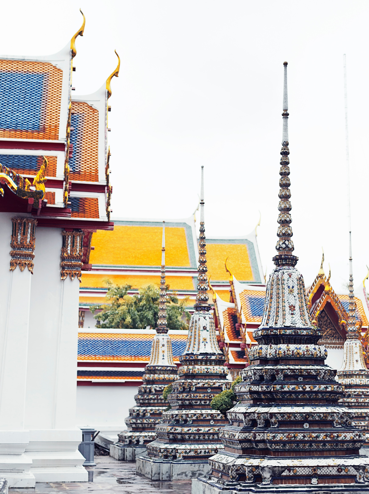
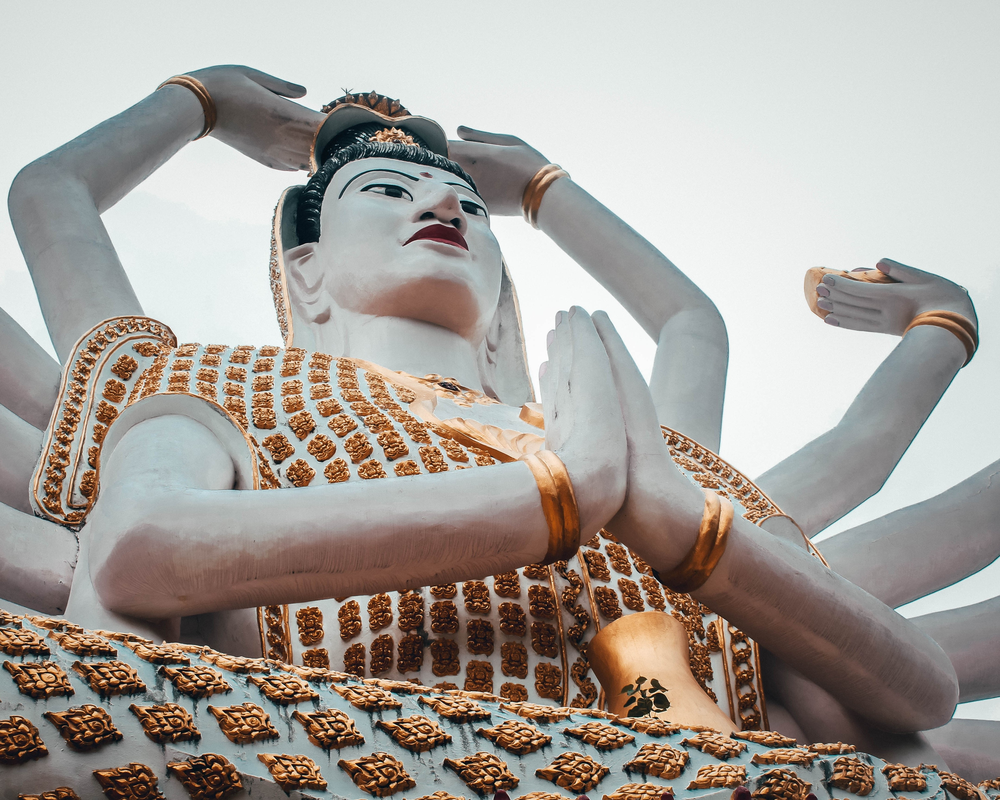
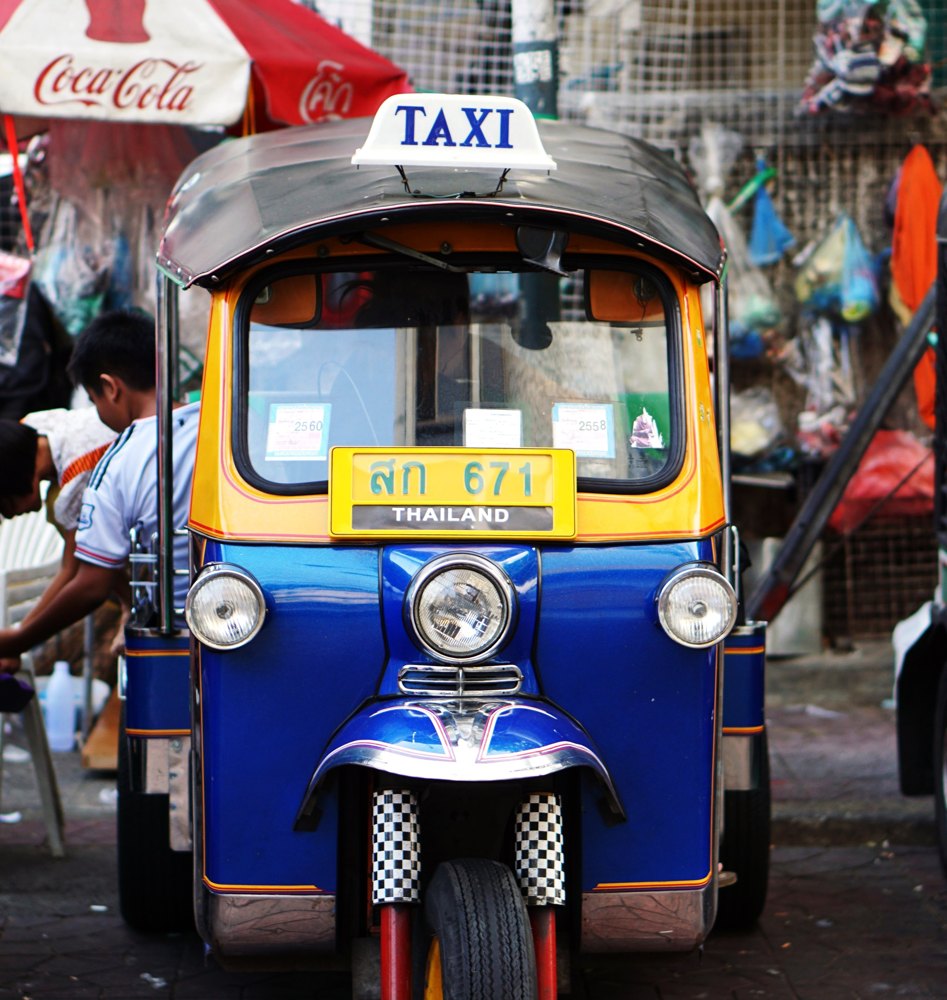

Visit a city today.
Bangkok is a bustling, busy urban grid with incredible contrasts at every turn. Towering skyscrapers lie shoulder to shoulder with village homes that are over two centuries old, while the skyline is taken up by ancient Buddhist temples alongside neon signs. Colorful markets such as the Chatuchak Weekend Market ply their goods to locals and tourists alike, where you can buy anything from food to antiques.
Find hotels in central Bangkok with our comprehensive guide featuring listings and reviews. There is something for all tastes and budgets, whether cheap accommodation or luxury five-star or boutique hotels, chain hotels, family friendly hotels, traditional Bangkok hideaways or specialist accommodation. Have a look at the deals on offer and book your hotel room now!
Three day in Bangkok is a decent time that will allow you to cover its highlights. You can visit the Grand Place and enjoy its beautiful Thai architecture, learn about the ancient Thai art in the museums, enjoy some shopping in one of the fantastic malls spread across the city and relax in the temples such as Wat Pho which also known as the Temple of the Reclining Buddha (The Giant Budha). We can make a 3 days plan for you!
Wat Pho is also known as the Temple of the Reclining Buddha, it is located near the Grand Palace on Rattanakosin Island. The temple complex covers 80,000m² and is Bangkok's largest temple as well as being one of the oldest, it also has the most extensive collection of Buddha images out of all Thailand temples (over 1,000).
The Grand Palace is Bangkok's number one attraction. The Grand Palace complex was the official home of the King since 1782, however today the present King Rama IX lives at Chitralada Palace and the Grand Palace is used for important events and ceremonies. The palace was also the base for the royal court up until 1925.The Grand Palace was built in 1782 under Rama I when he transfered the country's capital from Thonburi to Bangkok.
CentralWorld is a massive shopping center with all the shopping opportunities you could ask for and plenty of entertainment as well. The shopping center has 8 floors, 550,000m² of store space and a total 830,000m² in all.